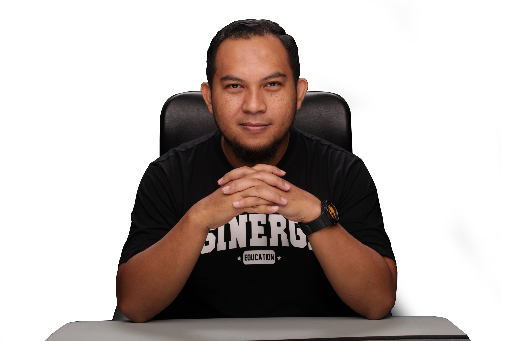

Sinergi Business Solution
Pendampingan untuk dipraktikkan.
Sejak 2006, kami bekerja bersama perusahaan, UMKM, dan individu melalui seminar, workshop, training, coaching, consulting, dan mentoring. Fokusnya beragam: kepemimpinan, pengembangan tim, sistem manajemen, hingga penguatan usaha.
Lebih dari 100.000 peserta pernah mengikuti kegiatan bersama Sinergi. Setiap program dirancang berdasarkan konteks klien, bukan satu materi yang sama untuk semua.
Lihat layanan